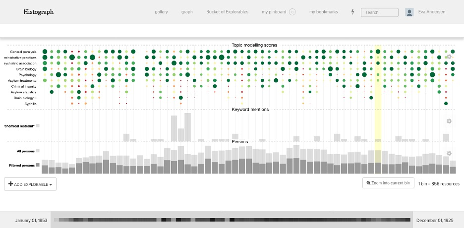

Topics, buckets and psychiatry. On the collective creation of a corpus exploration tool
Maria Biryukov, Roman Kalyakin, Eva Andersen, Lars Wieneke
Introduction
As described elsewhere (Biryukov et al. 2019) we conducted a probing exercise that brought together a historian and a computer scientist to cooperatively explore a research corpus. With the idea to find and trace the evolution of psychiatric knowledge, the team analysed the British Journal of Psychiatry[1] over a timespan of more than 70 years, consisting of 51k pages and covering a wide range of content types such as articles, book reviews, asylum reports, membership lists, etc. A particular challenge was the lack of coherence in the corpus: no logical units such as article boundaries and mediocre OCR quality restricted the direct application of topic modelling and other NLP techniques to a subset of articles through existing tools like MALLET.
The team chose to tackle this challenge by applying topic modelling in order to give structure to the corpus and detect relevant segments for historical analysis. After splitting the corpus into individual pages and applying other preprocessing steps, the team used Non-negative Matrix Factorization (Wang et al. 2012) to decompose the corpus into topics per year, assign words to the topics and to score the individual documents/pages.[2] We then evaluated the optimal number of topics using human evaluation as well as a Word2Vec corpus model (Mikolov et al. 2013) for topic coherence calculation. To enable a diachronic perspective on the corpus we applied dynamic topic modelling to the annual topics. Close inspection of the outcomes made it apparent to the historian that the approach enabled the discovery of weak signals and hidden information that were not easily accessible through conventional approaches.
However, we came to the understanding that a more in-depth historical analysis required a higher degree of autonomy for the historian, as well as facilities allowing multiple perspectives on the data and better ways to present and interact with it. This insight and the potential for a generalisable application convinced us to advance from a probing exercise to building a tool that empowers historians to query, review and explore datasets with a high degree of autonomy and direct access that doesn’t require additional mediation.
Building an interface for autonomy and empowerment
Due to the conceptual similarity and availability, we decided to adapt HistoGraph[3] a tool initially designed for the graph based exploration of multimedia collections (Novak et al. 2014; Wieneke et al. 2015; Düring et al. 2015). One of the decisive features of HistoGraph and a strong rationale for integrating our corpus in the tool is found in its drill-down capabilities: all analytical perspectives always lead back to the sources, enabling the researcher to confirm or refute the results of the computational analysis on a case by case basis.
We first performed a named entity extraction task using a combination of Flair’s ‘ner-fast’ model for entity recognition and Google Knowledge Graph for disambiguation.[4] Because of mediocre OCR quality and the historical nature of the corpus, we decided to boost the quality of the entity extraction by aligning the entities with a specialised dataset of historical actors in the domain of psychiatry using a basic string comparison approach.[5] While we initially hoped that the process would yield interpretable network structures, a critical review of the results showed that generic NED models are by design too “contemporary” to successfully identify historical actors and produce meaningful results – an issue we aim to address in the future.
To enable a meaningful perspective on the topic modelling described above, we decided to integrate a new view in histograph that shows a full perspective on the corpus with the ability to “zoom in” on selected parts. In this new view, pages are displayed in sequential order and aggregated in “buckets” of equal size, containing a different number of pages depending on the chosen zoom level. Buckets are displayed as clickable columns in the interface, while topics are displayed in the form of an aggregated heat map of topic distributions across the corpus (Figure 1). While working with the historian it became apparent that additional layers would facilitate the corpus exploration, e.g. through adding full-text search capability that presents an aggregated view of text hits across the corpus within the individual buckets.
Collective development and exploration
Of vital importance during our experiments was the constant feedback between the team members. Our discussions led to the insight that more analytical lenses are necessary to better explore the corpus because complex research questions can often not be captured by a single analytical perspective. In consequence, different layers were added such as the ability to map the results of a keyword search across the corpus. In consequence the pipeline allowed us to discover more relevant content. Our preliminary evaluation compared existing research on the same corpus with our results and we were able to find the same sources as identified by analogue ToC analysis as well as to identify relevant content in other sections that were not accessible through the ToC. For one particular research question — the discussion of the causes of general paralysis in the psychiatric community — this approach proved to be a powerful exploration tool. The extent to which this approach would work on other research questions needs to be explored further and in more detail but looks quite promising.
Brainstorming on this challenge led to the development of an “auto-complete query” feature that builds on the distribution of words in the corpus to refine queries. Initially we used the Word2Vec background model to expand seed terms specified by the researcher. The resulting query was used in the full-text search mode. However, it became apparent that a full-text search based on the constructed query would, from a historians’ point of view, lead to a too restricted number of results leaving out promising source material. Looking at this challenge from a computer science perspective, we noticed that the constructed query can be regarded as a vector in the word2vec model that allows to identify documents that are closely related to it, effectively enabling a custom topic for the exploration of the corpus. In close cooperation the team reviewed the feasibility of the approach and ultimately integrated the feature to allow for a more specific yet flexible analysis.
Conclusion and future work
The project started out as a highly dynamic, small scale exploration in the use of topic modelling for structuring an unstructured corpus. Based on the results of this exercise our work was shaped by ongoing discussions between the team members that lead to a co-construction process which not only yielded a new and – as we hope – generalisable tool for the exploration of unstructured or semi-structured corpora, but also shaped the perspectives of the individual team members: by discussing the different approaches used to develop a meaningful interface it allowed the historian an insight into the technology that was used and vice versa enriched the perspective of the computer science colleagues by gaining a deeper understanding of how historians work.
Figure 1. Example of the histogrpah interface displaying a diverse range of topics as well as keyword and person mentions.
Funding
The work of Eva Andersen has been supported by the Luxembourg National Research Fund (FNR) (10929115).
Footnotes
[1] See https://www.rcpsych.ac.uk/about-us/library-and-archives/our-history for details. The association was created as the “Association of Medical Officers of Asylums and Hospitals for the Insane” in 1841, changed its name to “Royal Medico Psychological Association” in 1926 and took its current name in 1971.
[2] We use dynamic topic modelling implementation available at https://github.com/derekgreene/dynamic-nmf for the yearly and dynamic topic modelling, as well as for the Word2Vec-based coherence evaluation.
[3] See http://histograph.eu/ and https://github.com/C2DH/histograph for a docker container, setup instructions and a sample dataset,
[4] We used the Flair 'ner-fast' model trained on the Conll-03 dataset. See https://github.com/zalandoresearch/flair/blob/master/resources/docs/TUTORIAL_2_TAGGING.md#fast-english-models; Google Knowledge Graph see https://developers.google.com/knowledge-graph
[5] The database is used in the 2TBI and TIC Collaborative project, and powered by Nodegoat. Originally it only contained information about Social Reform. See https://www.clariah.nl/projecten/research-pilots/2tbi